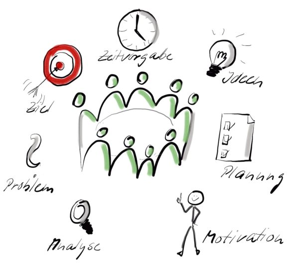
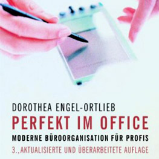

Organizing from Inside out
Julie Morgenstern, HOLT Verlag
Das war mein Einstiegsbuch in mein „Professional-Organizer-Leben“. Plötzlich habe ich eigene und fremde Ordnungsblockaden verstanden und nach der Lektüre individuelle und einfache Lösungsmöglichkeiten entwickeln können. Das von Morgenstern entwickelte System SPACE bietet eine Unterstützung “Gut Organisieren” zur Routine zu machen. Besonders gefallen hat mir, dass sie eine Wechselwirkung zwischen innen und außen sieht. Zunächst muss man sich fragen, wie kann und will ich leben und arbeiten, und wie muss ich das organisieren. Aber Morgenstern geht auch darauf ein, dass die äußere Ordnung große Wirkung auf unseren inneren Zustand haben kann.
Weitere Artikel

Meetingzeit reduzieren – Produktivität steigern
Meetings sind nach wie vor einer der größten Zeitdiebe in Unternehmen. Einen Arbeitstag pro Woche verbringt jeder Mitarbeiter durchschnittlich in Meetings. Das mittlere Management benötigt 40% und 50% seiner Arbeitszeit für …

Perfekt im Office, Moderne Büroorganisation für Profis
Dorothea Engel-Ortlieb, Redline Verlag Aus meiner Sicht für alle die ein Office zu organisieren haben, gleich ob eine Home-Office oder Büro in einem Unternehmen, eine Pflichtlektüre. Frau Ortlieb vermittelt absolut wichtige …